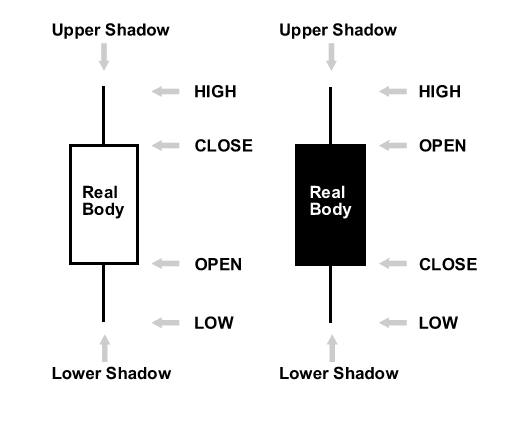
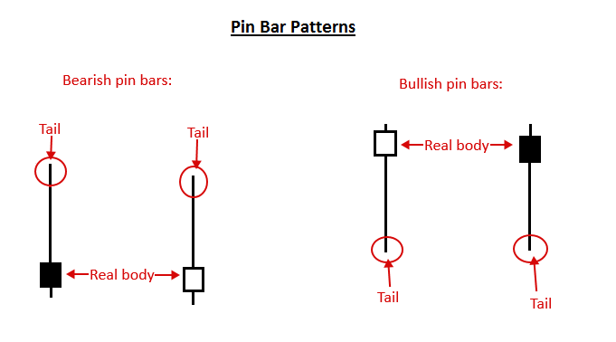
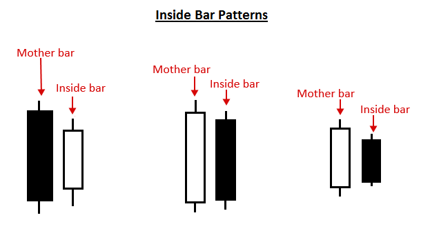

Introduction to Japanese Candlestick Patterns
What is a Japanese candlestick pattern?
A candlestick shows the open, high, low and close of the market for a particular period of time. If you’re looking at a daily chart time frame for example, each candlestick will reflect the open, high, low and close for that days’ worth of price action.
The primary difference between a candlestick and a standard price bar, is that candlesticks display a colored portion between the open and close of the candle. This allows traders to quickly see if price closed higher (bullish) or lower (bearish) on the day, which is important piece of information for any price action trader.
Let’s take a look at a picture of a bullish and bearish candlestick to see this more clearly…
Note: the candlestick on the left is a ‘bullish candle’ because its close is higher than its open. The candle on the right is a ‘bearish candle’ because its close is lower than its open….

The colored section of the candlestick is called the “real body” or body. Note: The color of the real body can vary between traders and depends on how they have the colors set / personal preference. The standard color scheme for the real body is white for bullish and black for bearish and is in our opinion, the cleanest and best option.
The thin lines poking above and below the body display the high/low range and are called shadows, tails or wicks…all three names apply to the same thing. The top of the upper shadow is the “high”. The bottom of the lower shadow is the “low”.
What is a candlestick pattern?
A candlestick pattern is a one or sometimes multi-bar price action pattern shown graphically on a candlestick chart that price action traders use to predict market movement. The recognition of the patter is somewhat subjective, as such it requires training by an experienced / professional price action trader as well as one’s own experience via screen time, to develop skill in identifying and trading candlestick patterns.
There are numerous different candlestick patterns, and many are just slight variations on the same basic principle. Therefore, at priceaction.com, we feel it makes more sense to focus in on a smaller ‘handful’ of proven candlestick patterns that give a trader a solid toolbox of trade signals to work with, rather than trying to learn 30 different patterns, many of which are essentially the same thing.
Here are some of our favorite price action trading candlestick strategies:
Pin bar candlestick pattern – A pin bar candlestick pattern is a one bar pattern that shows rejection of a price level or area. The pattern has a small real body and a long shadow or ‘tail’ on only one side, indicating rejection of that price area. Pin bars can be traded as reversal signals either within a trend or against a trend. Here’s what a pin bar looks like:

Inside bar candlestick pattern – An inside bar candlestick pattern is at least a two bar pattern (can have multiple inside bars) that shows indecision or stalling in a market. An inside bar trading strategy typically works best in a trending market as a price action breakout strategy but can also be used as a reversal strategy sometimes from key chart levels. Here’s an example of inside bars:

Fakey candlestick pattern – A fakey candlestick pattern is typically a three or four bar pattern that shows a false break of an inside bar pattern. The fakey pattern shows a ‘fake out’ has occurred in the market and the price is likely to then continue in the direction opposite the false break. Below, we see an example of what the fakey pattern looks like:

What is a candlestick chart?
A candlestick chart is a price chart that is populated by candlesticks, instead of standard price bars as in a bar chart or lines, as in a line chart.
Each candlestick shows the high, low, open and close for the period of time it reflects, this is the same information reflected in traditional price bars, but candlesticks make this information much easier to visualize and make use of.
Here’s an example of a typical candlestick chart. Note the pin bar candlestick pattern that formed from support on this chart, and the large up move that followed…

Advantage of candlestick charts
The primary advantage of a candlestick price action chart is that it provides a more impactful or perhaps ‘dramatic’ visual display of price movement over time, than what you will see on a standard bar chart or line chart. Due to the fact that each candle’s real body is colored in according to its close being bullish or bearish, the dynamics between price bars is significantly easier to read, and many traders would argue more ‘fun’ as well.
Ultimately, whether a trader uses a standard bar chart or a candlestick chart is a matter of personal preference and opinion. But, it is my opinion, and the opinion of most successful price action traders, that one should use candlestick charts to get a better view and feel for market sentiment and to more easily spot price action trading signals.
Original source : https://priceaction.com/price-action-university/beginners/candlesticks/